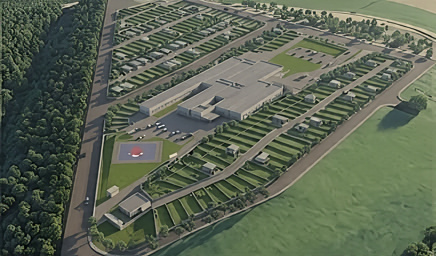
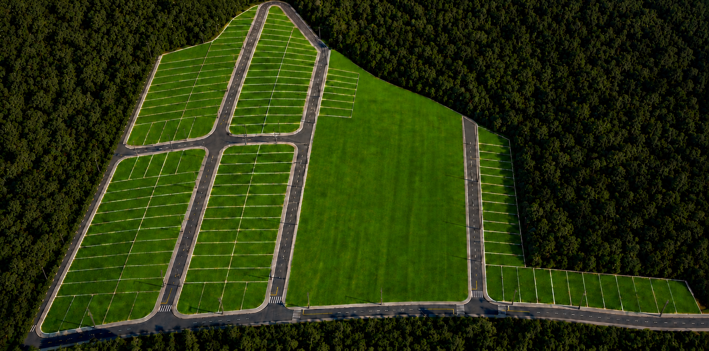

O Loteamento Jardim Alvorada foi pensado para quem busca praticidade, boa localização e espaço para construir novos projetos. Com infraestrutura essencial e lotes planejados, o empreendimento une conveniência e potencial de valorização em uma região em desenvolvimento.
Em uma das principais avenidas da cidade, conecta acesso facilitado aos serviços essenciais à imponência da vista para a Serra da Canastra, um cenário que acompanha o empreendimento e valoriza a experiência de viver bem.

Lotes planejados para oferecer liberdade de construção, praticidade no dia a dia e potencial de valorização em uma região em expansão.
Clique nos marcadores para descobrir a localização da Serra da Canastra, o acesso pela avenida principal, o hospital municipal, as vias internas e a infraestrutura completa.

Área institucional integrada ao loteamento destinada ao Hospital Municipal de São Roque de Minas, com heliporto, estacionamento e estrutura completa.
Hospital Municipal
Área institucional destinada ao Hospital Municipal de São Roque de Minas.
Entradas
Três acessos pela lateral do loteamento.
Quadras Residenciais
155 lotes a partir de 250m².
Infraestrutura
Energia, pavimentação e saneamento próprios.
Os marcadores representam pontos de interesse; as zonas indicam áreas geográficas e elementos do entorno.
Serra da Canastra
Silhueta ao norte — vista panorâmica natural.
Perímetro do Loteamento
Área total do Residencial Jardim Alvorada.
Área Verde
Espaço gramado integrado ao empreendimento.
Área Institucional
Espaço destinado ao Hospital Municipal.
Avenida Principal
Via de acesso principal ao empreendimento.
Os melhores lotes saem primeiro. Fale com nossa equipe e descubra a localização ideal para você.
Falar com Consultor →